Museum MACAN
Seni kontemporer dan opini pribadi
Sekarang Museum MACAN jadi salah satu bagian yang paling enak dieksplor karena dokumentasinya sudah jauh lebih lengkap. Menurut saya, tempat ini menarik bukan karena semua orang harus punya tafsir yang sama, tetapi justru karena karya-karyanya mendorong kita berhenti sejenak, melihat detail, lalu berani punya opini sendiri.

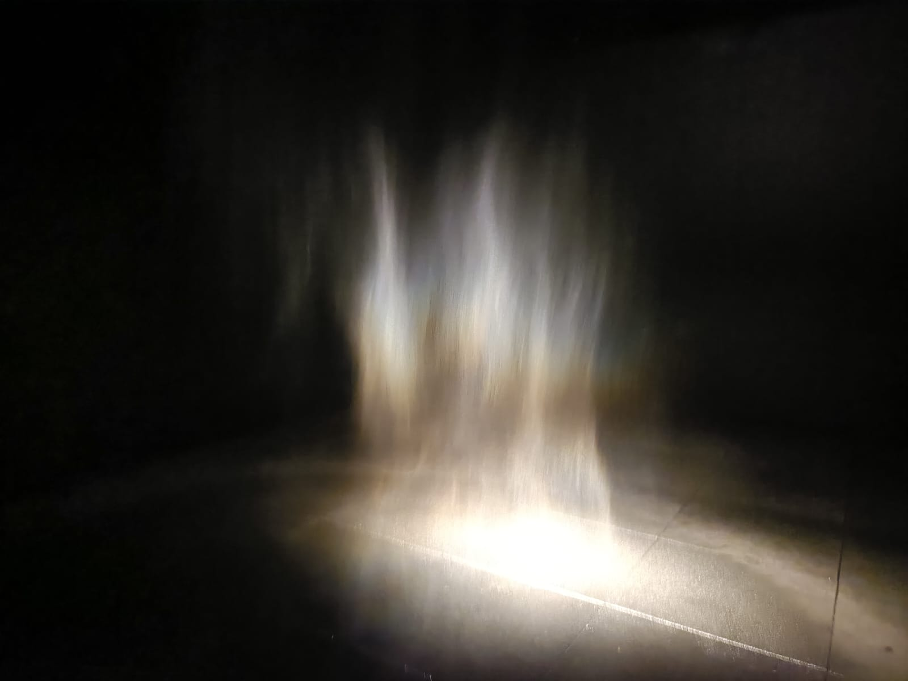
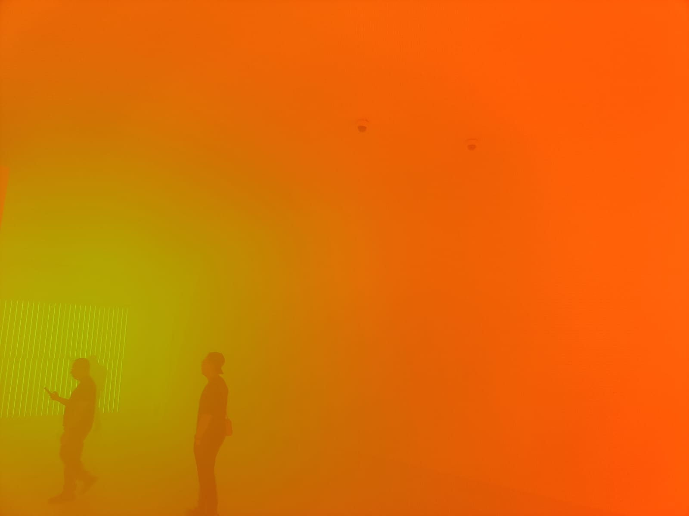
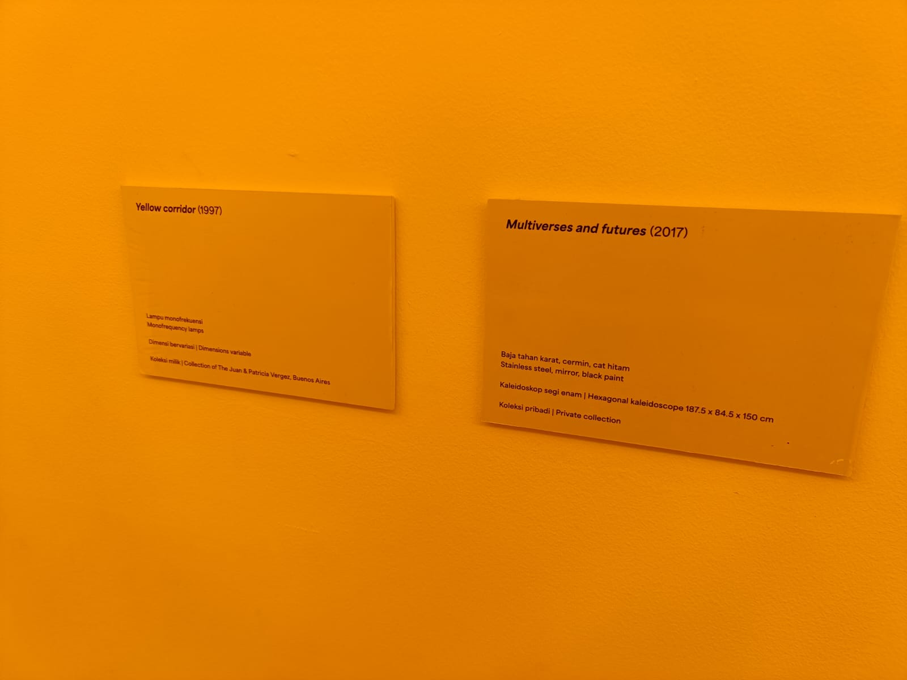
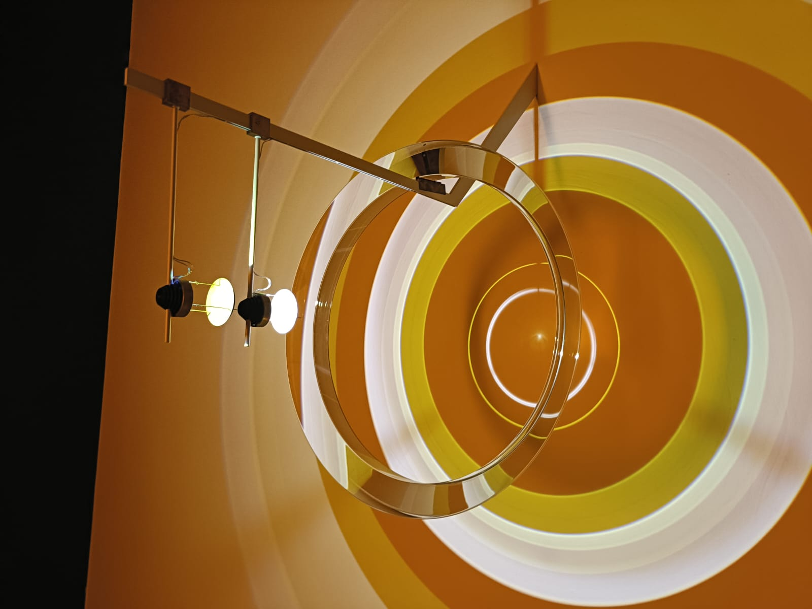
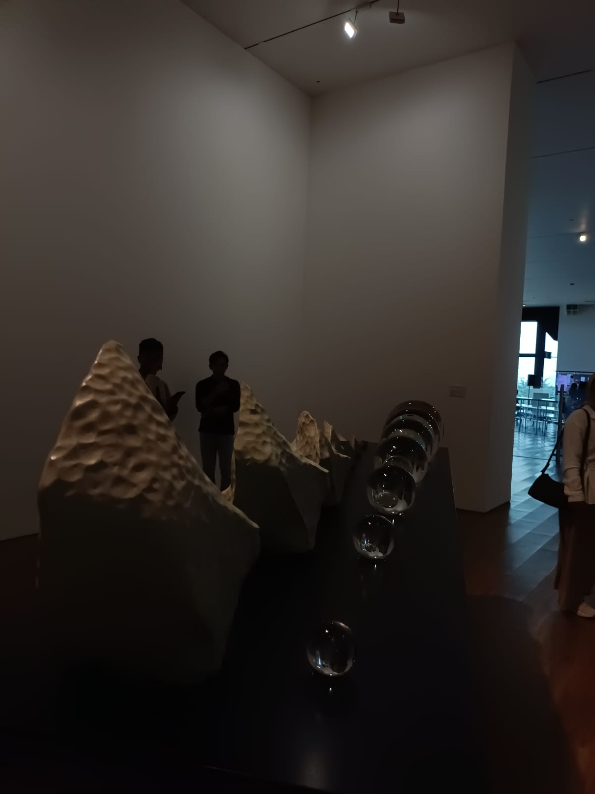
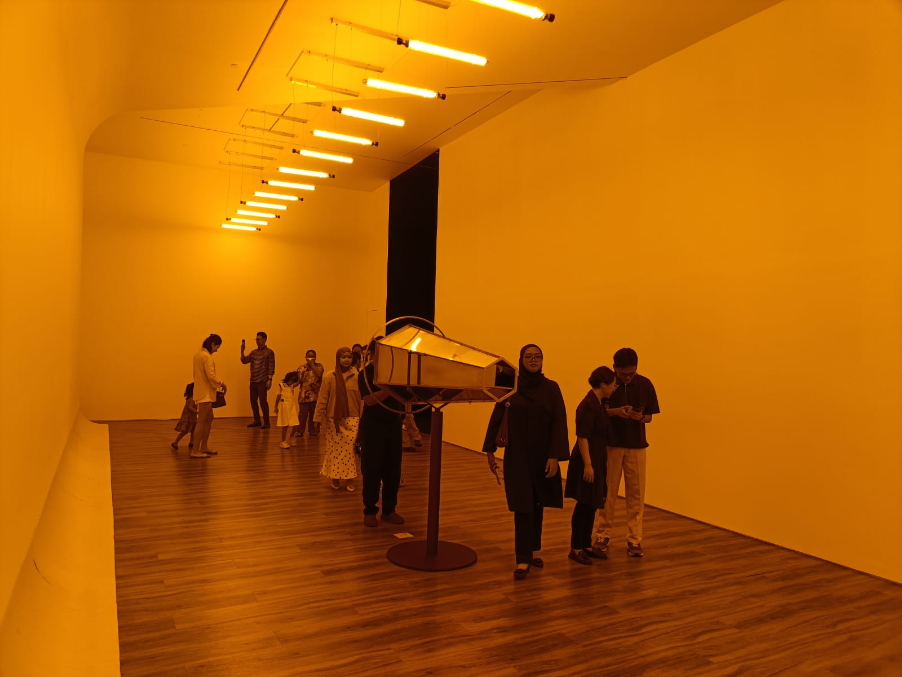
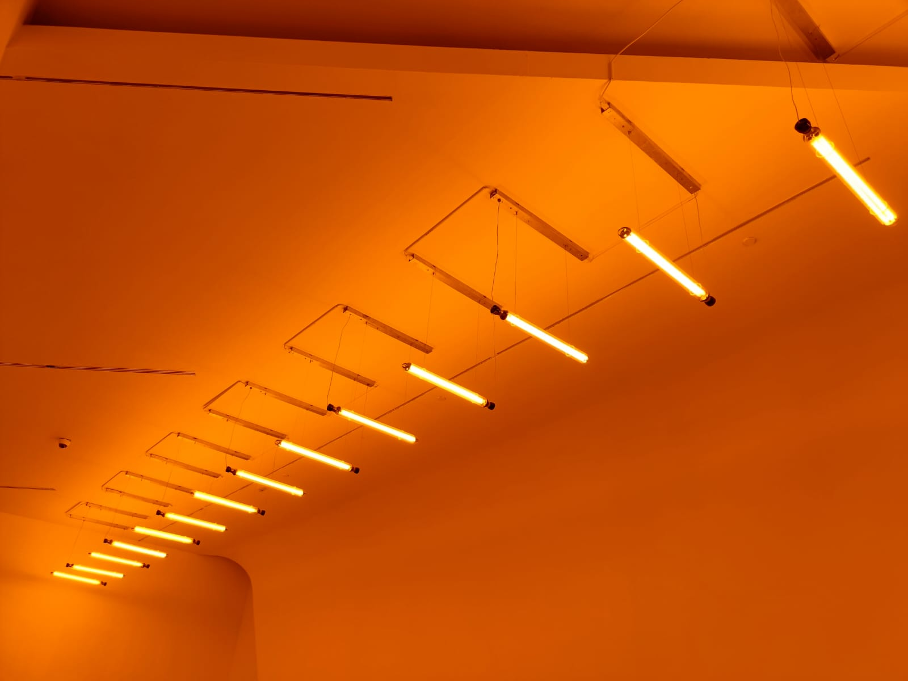
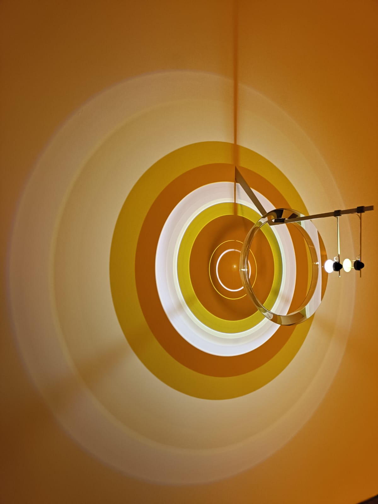
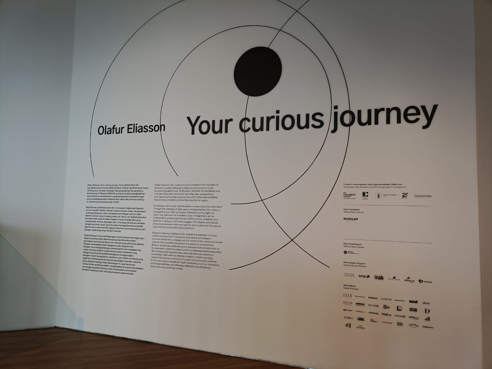
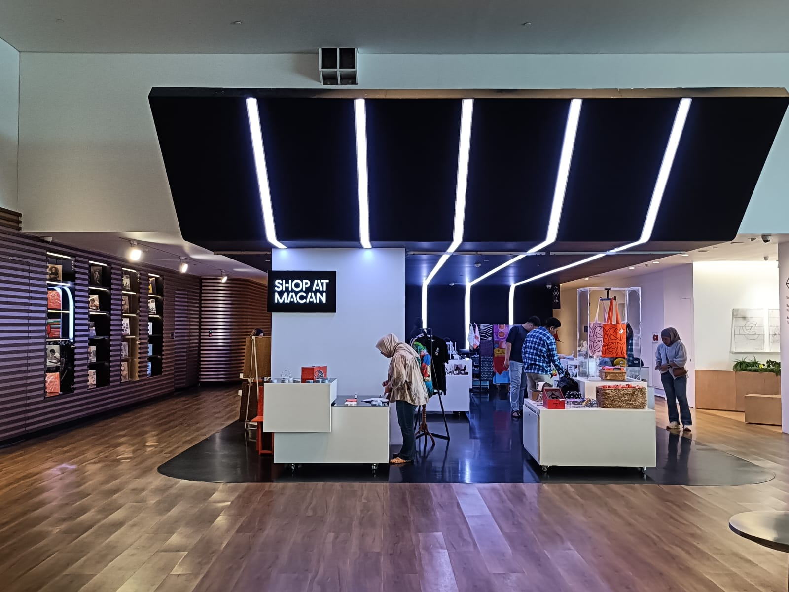
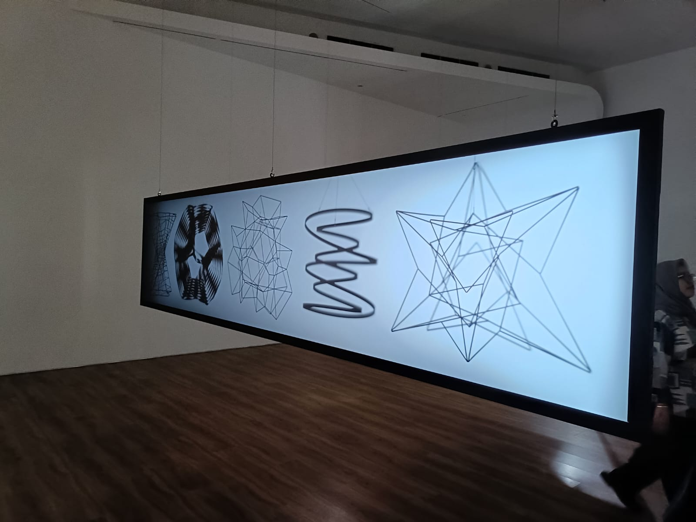